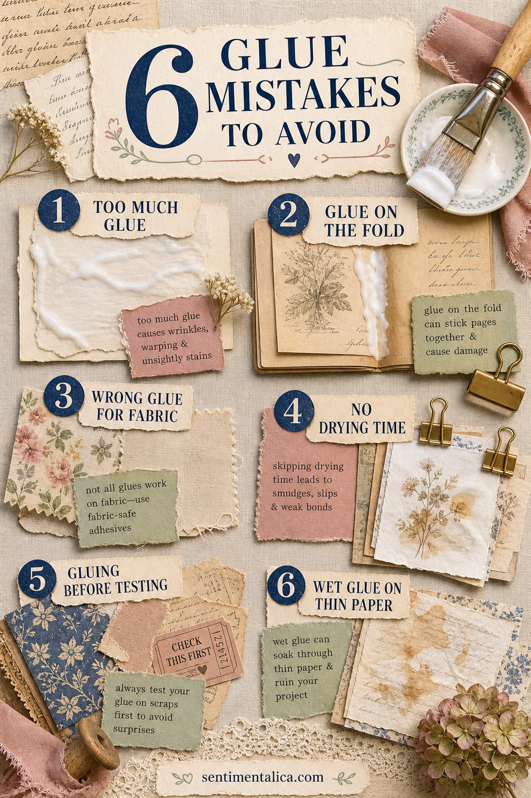
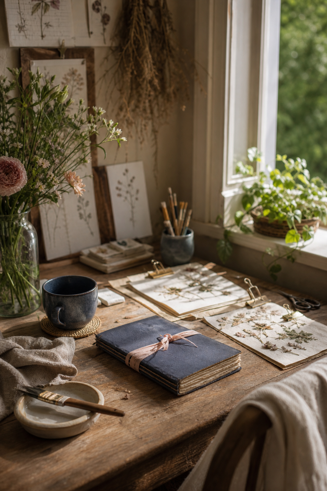

Glue problems rarely appear while a page is still on the table. They show up later as ripples, stiff folds, dark spots, and fabric that quietly lifts away. The safest approach is not more adhesive, but a thinner, better-placed layer.

Use less than looks necessary
A thick white coat adds moisture without adding much strength. Apply a thin layer from the center outward, leaving the final few millimeters until you know the piece is positioned correctly. For small paper scraps, dots at the corners may be enough.
Keep glue away from the fold
Adhesive across a gutter dries into a stiff hinge. Stop short of the fold or divide a wide collage element into two pieces. Open and close the spread once while the glue is still workable.
Match adhesive to the material
Paper glue is not always reliable on lace, ribbon, or heavy fabric. Test a fabric-safe adhesive on an offcut. For delicate cloth, hide a few tiny attachment points beneath another layer rather than soaking the whole piece.

Allow real drying time
A page can feel dry on top while moisture remains underneath. Place clean release paper between spreads, close the journal lightly, and add a modest weight. Leave it alone before adding another wet layer.
Test the layout before gluing
Photograph your dry arrangement. Then glue the largest base piece first and rebuild from the photo. This prevents hurried lifting, torn fibers, and the temptation to cover a misplaced element with more decoration.
Protect thin and translucent paper
Wet glue can darken tissue and make book paper buckle. Try a glue stick intended for paper, narrow double-sided tape, or attach only the edge beneath an opaque layer. Always test an unseen scrap first.
A gentle repair
If an edge lifts, slide a tiny amount of adhesive beneath it with a scrap of card and press through clean paper. If a page has warped, let it dry completely before flattening it. Adding more moisture too soon usually makes the problem larger.
Make a small adhesive test card
Glue samples of the papers you use most onto one sturdy card: book paper, cardstock, tracing paper, ribbon, and fabric. Label the adhesive on the back and check the card again after a day. You will see which combinations wrinkle, darken, bleed, or lift before risking a finished spread.
Keep the card with your tools. When you try a new glue, add one more sample instead of relying on the promise on the bottle. Climate and paper coating can change how an adhesive behaves.
Clean tools before the glue dries
Wipe bottle tips, close caps, and wash brushes immediately. Dried crumbs can drag across delicate paper and create lumps beneath a collage. Reserve one inexpensive brush for adhesive so paint and glue never contaminate each other.
Know when not to glue
Valuable photographs, original letters, and irreplaceable family papers are safer in photo corners, archival sleeves, or removable pockets. You can enjoy the original without permanently changing it. A copy can take the glue while the keepsake remains protected.
The goal is a page that opens easily and still feels like paper. A careful pause before gluing preserves both the materials and the memory you are building around them.
Image note: Some visuals in this article were created with AI and curated by Sentimentalica.